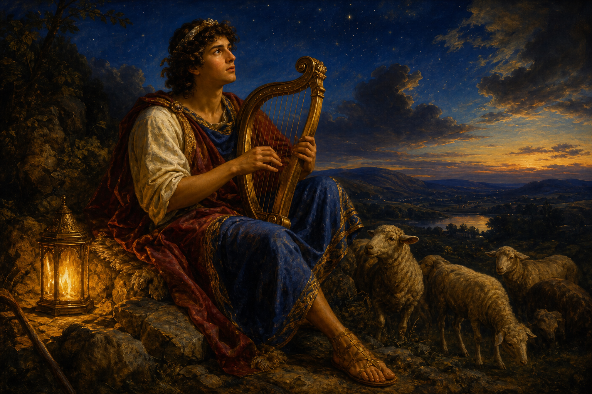

Old Testament · Book 19 of 39
Psalms
Israel's songbook — 150 prayers set to music, sung from caves, thrones, and the depths of grief.
Every emotion a human heart can hold has already been sung here.
Before it is a book of answers, Psalms is a book of permission — to shout, to weep, to doubt, and still to sing.
What happens in Psalms
There is no plot here in the ordinary sense — instead, 150 individual songs and prayers collected across centuries, written by shepherds, kings, and exiles who refused to keep their feelings tidy. A young David sings to a harp in open fields, trusting a God he has not yet seen act in his own life the way He later will. The same David, years later and hunted by his own son, writes psalms that read like a diary left open on a battlefield. There are psalms of furious complaint that accuse God of silence, psalms of thunderous praise that call mountains to clap their hands, and psalms of quiet trust — a shepherd, green pastures, a table set in the presence of enemies. Scholars group them by mood: laments, thanksgivings, royal psalms, wisdom psalms, songs of ascent sung by pilgrims walking uphill toward Jerusalem. Together they read less like a single story and more like the full emotional range of a nation set to melody.
Why it matters
Psalms has shaped how people pray for three thousand years because it refuses to perform. It gives words to despair as readily as to delight, and insists both belong in worship. Jesus quoted the Psalms more than any other book, including from the cross itself — proof that this ancient songbook still has breath left in it.